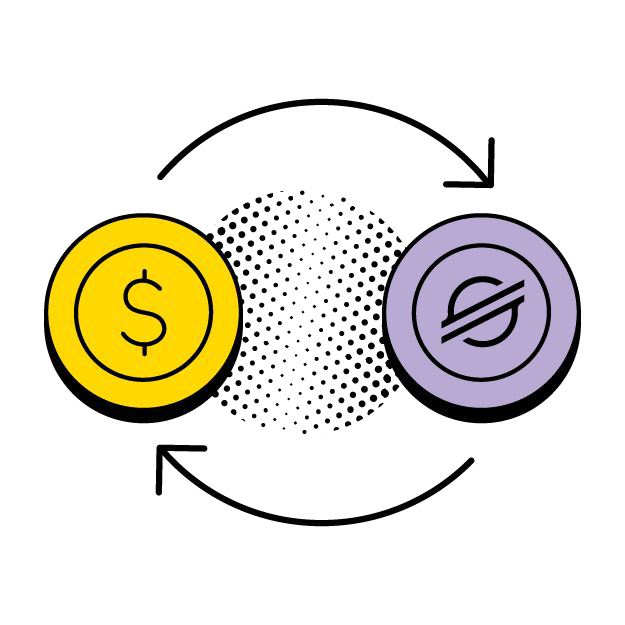
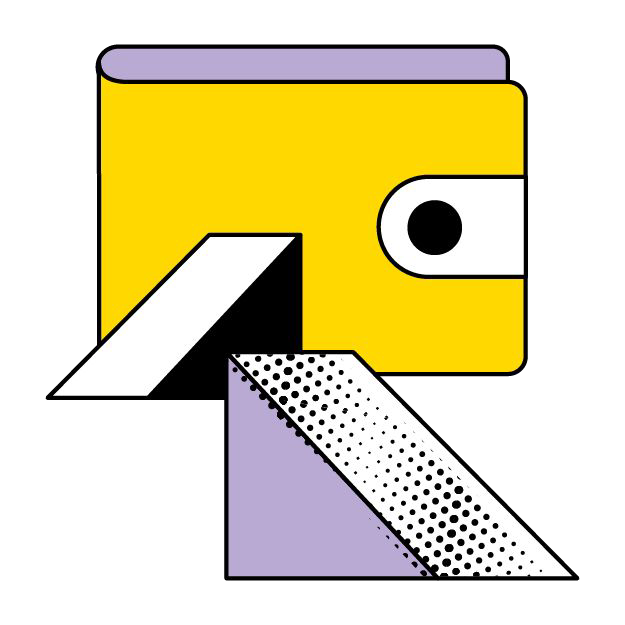
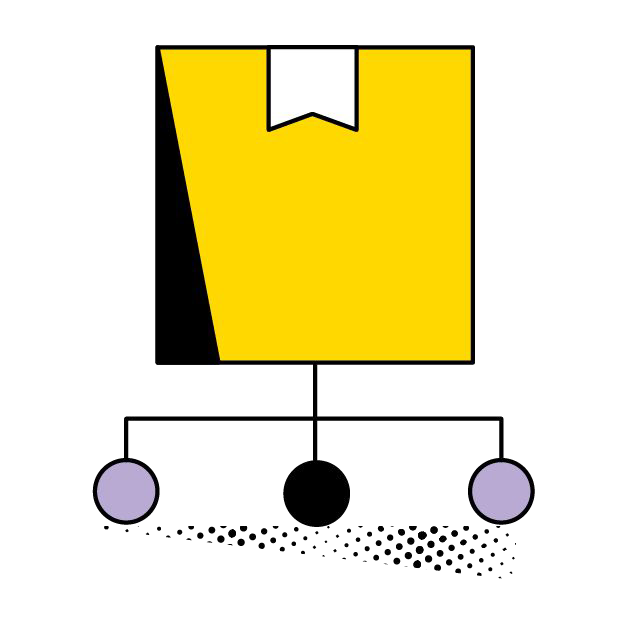

Fund your dependencies on-chain.
Upstream routes a share of everything a project earns to the contributors and open-source libraries it is built on, and lets those libraries do the same for theirs.
CAZLMMGSAHCLH66EHM6ROL3PA2Y5Z2OQKJHN7GMZEBGDGVRYYCGHRGBS
- Network
- Stellar testnet
Protocol 28 - Toolchain
- soroban-sdk
28.0.0 - Weight scale
1,000,000ppm- Recipients
- up to 50 per split
- Wasm size
- 14.3 KB of 128 KiB
- Tests
- 15 passing
Apache-2.0
The problem
Every app on Stellar runs on libraries someone else maintains: SDKs, wallet kits, oracles, indexers. The money the ecosystem earns rarely reaches those maintainers. Funding happens project by project, and the dependencies underneath stay invisible.
The SCF Public Goods Working Group wants to change that. Its plans include a Dependency-Matching Pool, retroactive public-goods funding, and a Dependency-Match Bonus that credits a project's top dependencies when it reaches mainnet. PG Atlas already maps the ecosystem's dependency graph and scores how critical each component is.
What's missing is the rail that moves the money. Stellar has no trustless, on-chain way to say "10% of everything this project receives goes to these dependencies, weighted like this," and have it happen without an administrator pressing a button. The one splitter SCF has funded is admin-triggered and has not been updated since October 2024. Drips, the best-known dependency-funding protocol, runs only on EVM chains; on Stellar it operates a bounty program, not its funding contracts.
- An admin-triggered splitter, last updated October 2024
- Drips, EVM-only; a bounty program on Stellar
- Dependency graphs, but no rail to pay them
What Upstream is
Upstream is a single Soroban contract that holds many splits. A split is a list of up to 50 weighted recipients, where weights are parts per million and must total exactly 1,000,000. A recipient is one of two things:
An account.
Any Stellar wallet (G…) or contract (C…), paid when it collects.
Another split.
Its share flows into that split, which divides it again. This is how a project funds a dependency list, and how each dependency funds its own.
Anyone can deposit into a split: a grant tranche, app revenue, a bounty pool, an agent payment. Upstream accepts any Stellar asset contract or SEP-41 token, and keeps separate books for each.
deposit; accounts leave with collect; nested splits receive their share with pull, one hop at a time.How money moves
Upstream never pays a whole recipient list in one transaction. Money moves in three independent calls, each small and bounded.
Deposit

A funder sends tokens into a split. The contract measures how much it actually received and adds that to the split's running total for the current epoch. The cost is the same for a split with two recipients or fifty, which is what makes frequent small payments viable: a steady-state deposit on testnet costs 0.0088 XLM.
Collect

Anyone can trigger an account recipient's payout, but the tokens only ever go to that recipient, so keepers, bots or friends can settle on someone's behalf without being able to redirect anything. A recipient that wants its funds elsewhere, such as an exchange deposit address with a memo ID, signs collect_to and picks the destination.
Pull

Anyone can move a nested split's share into that split's own current epoch. Deep dependency trees resolve one hop per call, so no transaction ever has to walk an unbounded graph.
- alicepending
- bobpending
- carol · no trustlinepending
- alice
- bob
- carol · no trustline
Guarantees
Money already received cannot be redirected
Changing a split's recipients starts a new epoch. Everything credited under the old recipient list stays with those recipients permanently; only deposits made after the change follow the new list. A split owner cannot quietly reroute funds that already arrived, and old epochs stay claimable forever.
1,000,000 ppm1,000,000 ppmMore properties
lock freezes a split's recipients forever, or a split can be created locked.The accounting
For every split, epoch and token, Upstream stores acc: the total amount ever credited. For every recipient that has settled, it stores a checkpoint of acc at that moment. A recipient with weight w is owed:
Because entitlement is computed from the lifetime total rather than deposit by deposit, rounding never compounds. Each recipient loses at most one base unit per epoch, and that dust stays in the contract.
| Recipient | Weight (ppm) | Per-deposit rounding | Upstream |
|---|---|---|---|
| alice | 333,333 | 0 | 0 |
| bob | 333,333 | 0 | 0 |
| carol | 333,334 | 0 | 0 |
| Lost to rounding of 0 | 0 | 0 |
weight × acc past what an i128 can hold, so settlement can never overflow.Built for Soroban
Each design choice answers a specific property of the Stellar network, verified against live mainnet settings.
| Network property | How Upstream handles it |
|---|---|
| Token transfers to an account without a trustline fail | Per-recipient pull settlement; a failed collect rolls back and its share stays claimable |
| Per-transaction limits: 400M CPU instructions, 200 ledger writes | Largest call uses about 1.98M instructions and 4 writes, under 1% of either limit |
| Storage expires: persistent entries start with 120 days (2,073,600 ledgers) | Touched entries extend toward 120 days, only when at least a day is due, and by at most 30 days per call |
| Expired entries archive | Uncollected balances are never lost; the next transaction that touches them restores them automatically |
| Storage rent: 1,000 stroops per KB on mainnet today | About 0.17 XLM per KB per 120 days; a 50-recipient list is 6.4 KB |
| Muxed addresses cannot be stored as keys | Recipients are stored as base addresses; collect_to accepts a muxed destination |
| RPC keeps events for about 7 days | Every state change emits a typed event with split id and token as topics, ready for a long-lived indexer |
| Re-entrant calls are blocked by the host | State is settled before every outgoing transfer regardless |
Contract interface
| Function | Signed by | What it does |
|---|---|---|
create_split(owner, recipients, locked) | owner | Creates a split and returns its id |
update_recipients(split_id, recipients) | owner | Replaces recipients and starts a new epoch; fails if locked |
lock(split_id) | owner | Freezes recipients permanently |
transfer_ownership(split_id, new_owner) | both owners | Hands the split to a new owner |
deposit(from, split_id, token, amount) | from | Funds a split; returns the amount credited |
pull(parent_id, parent_epoch, child_id, token) | anyone | Moves a nested split's share into it |
collect(split_id, epoch, account, token) | anyone | Pays an account its share, to itself |
collect_to(split_id, epoch, account, token, to) | account | Pays the share to any address, including muxed |
claimable(split_id, epoch, payee, token) | read only | Amount a payee could settle now |
get_split · get_recipients · get_received · next_split_id | read only | Views |
split_createdrecipients_updatedsplit_lockedownership_transferreddepositedpulledcollected
Verification
Unit tests
Tests run against the Soroban host with mainnet resource limits and mainnet storage settings enforced.
- 01Each recipient is paid exactly its weight
- 02Rounding never overpays and never compounds
- 03Collect needs no signature but pays only the recipient
- 04Collect-to requires the recipient's signature
- 05A recipient without a trustline only blocks itself
- 06Updates start an epoch and protect received funds
- 07Locked splits cannot be updated
- 08Owner actions require the owner's signature
- 09Ownership transfer moves control
- 10Nested splits route shares to dependencies
- 11Pull rejects a split that is not a recipient
- 12Recipient lists are validated
- 13Deposits are validated
- 14Tokens are accounted separately
- 15A 50-recipient split stays within network limits
Live on testnet
The contract is deployed on Stellar testnet. A split paying alice 700,000 ppm and bob 300,000 ppm received deposits of 10 XLM and 1 XLM. Alice collected exactly 7 XLM and then 0.7 XLM; bob collected exactly 3 XLM. Every transfer and contract event appeared on-chain as expected.
| Call on testnet | Fee charged |
|---|---|
| deposit, steady state | 0.0662 XLM |
| collect, steady state | 0.2136 XLM |
| First calls on a fresh deployment | 32–42 XLM |
The first-call fees are almost entirely one-time storage rent: the first deposit paid 40.29M stroops of rent against 16.7K stroops of compute. Testnet's minimum storage lifetime is 7 days, so early calls topped the contract, its code and new entries up toward the 120-day target. Mainnet entries start at 120 days, so these become small daily extensions.
Estimated mainnet costs
| Call | CPU | Writes | Est. fee |
|---|---|---|---|
create_split, 50 recipients | 1.96M | 4 | 1.06 XLM |
deposit, first for a token | 0.38M | 4 | 0.075 XLM |
deposit, subsequent | 0.41M | 4 | 0.011 XLM |
collect, first time | 0.50M | 3 | 0.078 XLM |
pull | 0.31M | 2 | 0.062 XLM |
update_recipients, 50 recipients | 1.98M | 3 | 1.03 XLM |
Estimated with mainnet storage settings and the live rent rate. They exclude Wasm execution overhead, so treat them as lower bounds until confirmed on mainnet.
Landscape
Others have built payment splitting on Stellar. Upstream's focus is the guarantees dependency funding needs.
| Property | Upstream | Tributary | SoroSplits | Drips |
|---|---|---|---|---|
| Status | Testnet, unaudited | Testnet, unaudited, active | SCF #19 and #23 ($153.7K); last update Oct 2024 | Production on EVM chains; on Stellar, bounty program only |
| Payouts | Per-recipient pull, anyone triggers | Push pay(), or deposit then distribute() | Admin triggers, recipients withdraw | Pull-based |
| Changing recipients after funds arrive | New epoch; received funds protected | Controller updates; no epochs documented | Editable until locked | Owner updates |
| Nested splits | Yes, one hop per pull | Yes | Manual | Yes, Drip Lists |
| Rounding | At most 1 unit per recipient per epoch | Dust to the last recipient each payout | Basis points | Dust stays with the splitter |
| SDK and dashboard | Not yet | Yes | Yes | Yes |
Tributary and Drips details come from their public documentation as of September 2026.
Limitations
- 01Not audited and not on mainnet. Do not use it with real funds yet.
- 02No TypeScript SDK or dashboard yet.
- 03No payments to GitHub repositories before their maintainers claim them.
- 04No per-split deposit address, so plain payments such as x402 cannot route into a split directly.
- 05One contract custodies every split's funds.
- 06Split loops (A pays B, B pays A) are allowed. Funds cannot be lost, but they can circulate.
- 07If a token over-reports a transfer, any excess beyond the requested amount stays in the contract.
- 08Anyone can trigger a payout to a recipient, even one that would rather wait.
Roadmap
Mapped to the three Stellar Community Fund build milestones.
MVP
- Core contract: create, update with epochs, lock, ownership, deposit, pull, collect
- 15 unit tests under mainnet limits, plus a cost report
- Testnet deployment with end-to-end verification
- TypeScript bindings and SDK
- Property and fuzz tests for accounting invariants
Testnet
- Repository payees: fund a GitHub repo before its maintainer claims it, with a refund deadline and a swappable attestation verifier
- Import dependency weights from PG Atlas
- Per-split deposit addresses, so x402 and plain payments route into a split
- Indexer and dashboard for splits, flows and claimable balances
Mainnet
- Security audit through the Soroban Audit Bank
- Mainnet deployment, documentation and monitoring
- Payment streams built on top of splits
Open source
Upstream is written from scratch and released under the Apache-2.0 license. The code, tests and documentation live at github.com/Salmatcre8/upstream.
Contributions are welcome, from new tests and SDK work to the repository-payee and PG Atlas features on the roadmap. The repository's contribution guide explains how to set up the toolchain and run the tests, and its security policy explains how to report vulnerabilities privately.